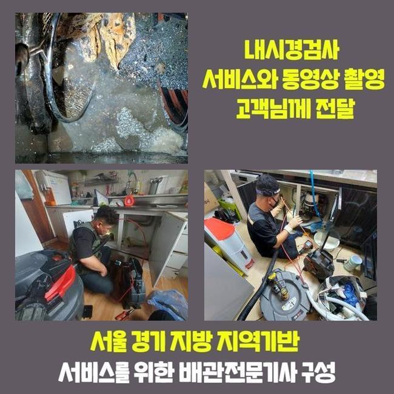
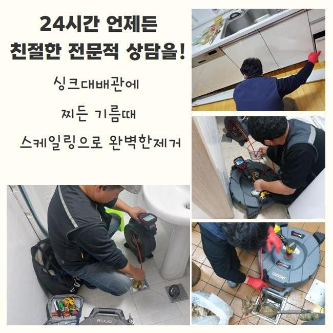
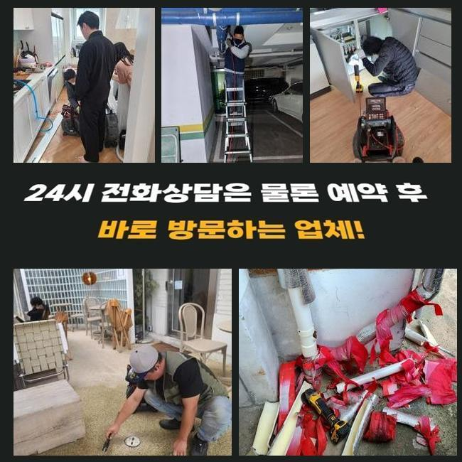
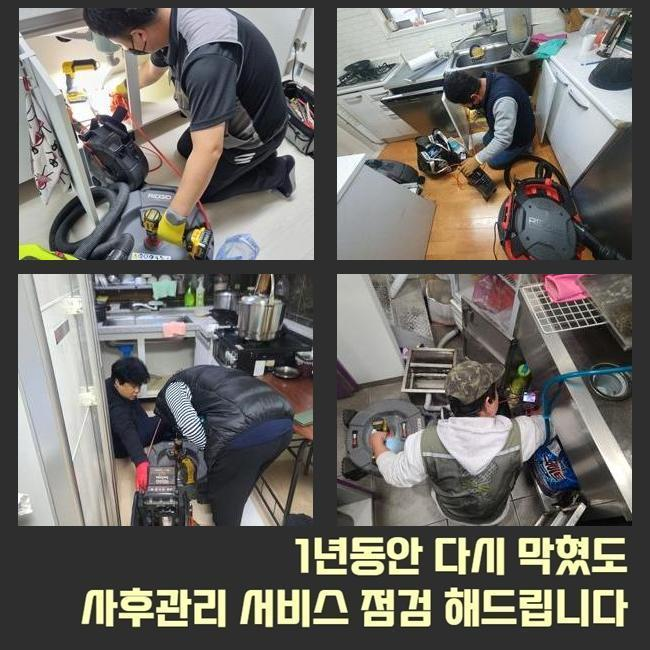
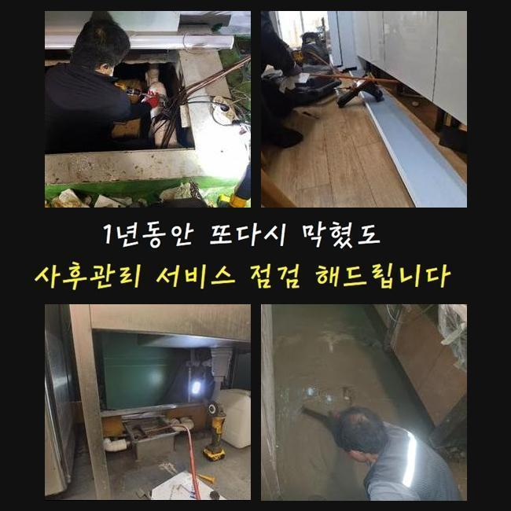
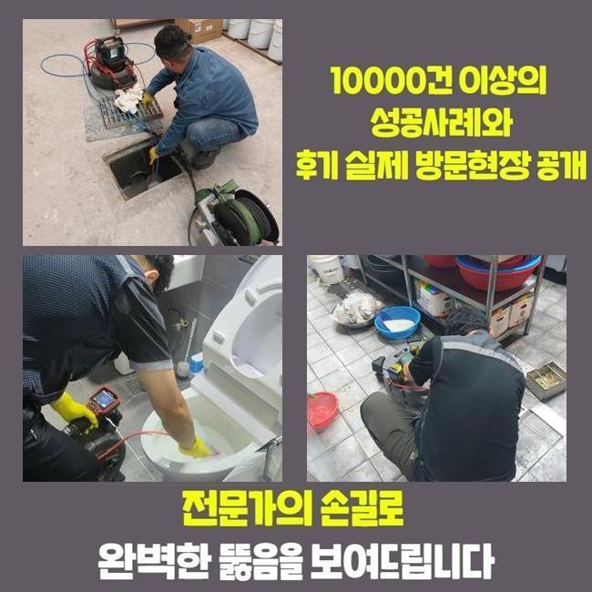
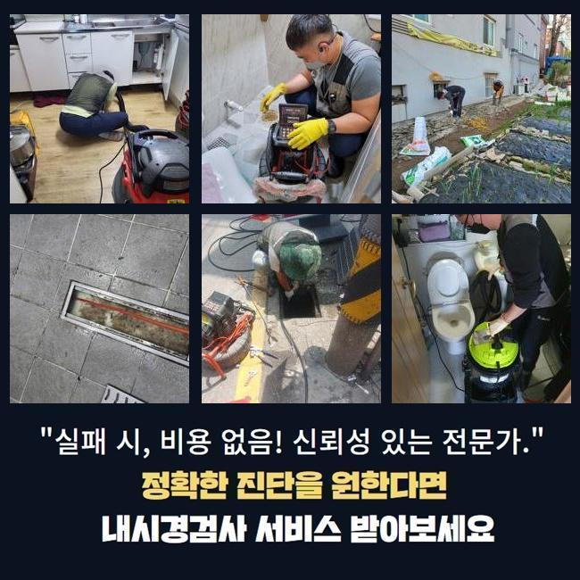

🏠 안산 와동화장실하수구막힘 백운동 하수구뚫는업체 수리업체
안산 싱크대막힘 전문 시공 후기

📋 작업 개요
- 위치: 안산
- 서비스 유형: 싱크대막힘, 하수구막힘, 배관막힘, 역류해결, 뚫는업체, 배관청소, 고압세척, 설비공사, 악취차단
- 작업 일시: 2025. 2. 13. 16:48
- 업체명: 하수구수사대 (010-5615-2118)
🔍 문제 상황
안산 와동화장실하수구막힘 백운동 하수구뚫는업체 수리업체
편안해야할 가정내에서 때때로 발발하는 고장들이 있습니다
그것중 한가지로 하수관막힘을 말씀드릴수 있어요
배관이 막혀버리면 주변환경이 더러워질수 있고 일상의 고충을 증대시킵니다
배수불가 사태로 인해 욕실사용도 어려워지고 역류증세까지 보인다면 더욱더 사태는 악화일로로 가게되겠죠
금번에는 투룸에서 관로막힘이 발발해 여러 기기를 동원해 해결한 내용을 말씀드리겠습니다
의뢰자께서는 다용도실 안에 배치된 통돌이통돌이세탁기기에서 배수문제가 발발하였다며 저희팀에 문의를 넣으셨는데요
작업차량에 샤프트장비와 흡입기기 그것에 더하여 내시경cctv까지 갖추고 의뢰인의 댁으로 이동했습니다
방문하였더니 퀴퀴한 내가 진동을 하였고 이물질이 토출되어 있는 정황까지 목견할수 있었어요
세탁버튼을 눌러서 물을 내려보려 했지만 반대로 토출되는 사태가 발발하였다고 하소연하셨어요
버블만 방출되는게 아니었고 여러가지 오물들도 나오는 모습이었어요
일부의 시설에선 세탁실과 주방시설의 배수관이 통하는 경우도 있습니다
그부분 역시 점검해보기로 했죠
정황을 분명하게 간파하기 위하여 의뢰인께 싱크대 쪽이나 또다른 관로에 막힘이 일어났거나 역류증세가 생긴적은 없었는지에 대해 여쭸는데요

🔎 원인 분석
💡 전문가 진단: 정밀 진단 장비를 사용하여 슬러지의 고착 여부를 판명하고 타격/세척 작업을 실시했습니다.
7일전쯤 물이 안내려가 인터넷에서 구매한 구연산과 세제를 투입하신적이 있다 말하셨어요
그걸 토대로 분석해본 결과 주방시설쪽의 하수도에 고장의 사유가 있을거란 판단이 들었어요
저희들이 방문한 지점의 정체를 처리하려 연유를 살피기로 했죠
내시경기기를 활용하여 파이프 내측을 진단하기로 한건데요
배수공이 차단되어 내시경마저 안들어갈땐 방수기능이 탑재된 청소기기로 관로의 노폐물을 처치합니다
이런 과정을 바탕으로 수리시간을 단축할수 있답니다
청소과정에서 크고 작은 찌꺼기들과 잔재들이 배출된것을 확인하였는데요
하지만 해당 업무만으로는 근본적인 물막힘 사유가 어떤건지 밝히지는 못했답니다
초기에 실행한 흡입장비로 처치못하는 것들이 많았기 때문에 즉각 배관카메라를 넣어서 역류가 발발한 배수관을 조사하기로 결정합니다
잔재들을 세밀하게 분석해보니 해안에 많이 보이는 모래알갱이들이었어요
빨래를 하는 과정에서 배출된 정황일 여지가 높았어요
고객님에게 휴가일정이 근래에 있으셨나 물어보았더니 부산쪽의 해안가에 갔다오셨다고 말해주셨어요
우선하여 눈에띄는 이물질을 제거하였고 더욱 전면적으로 세척작업을 하기로 합니다
그리고선 배수관 안쪽까지 정리할수 있는 테크닉과 장비를 쓰기로 결정했죠

🔧 작업 과정
내시경cctv를 적용하는 것은 배관전체의 문제점을 명확히 간파하고 체증을 해소하려는 목적인데요
석션기기로 세정을 끝마치고 노즐 끝단에 존재하는 내시경cctv를 이용하여 하수구 하단부를 관찰하게 되었죠
배관 곳곳을 점검했고 실체적으로 말썽이된 요소를 인지할수가 있었네요
보는바와 같이 관로막힘은 여러가지 변인들에 기인하여 일어나는 양상을 보이고 해결방안이 단순한것도 아니죠
그렇기때문에 전문적인 장비들을 토대로 공정을 이어나가야 무난하게 끝맺음할수 있는거랍니다
만약에 어설프게 정체막힘문제를 정리하려든다면 더욱더 막힘이 심화될수 있단걸 기억하시길 부탁드립니다
배관 내부를 내시경cctv로 진단하였어요
하수관의 총길이는 우리의 예상보다 큰편이고 구성도 난삽하여 바로 이해하기에는 어려움이 있죠
이러한 상황에서는 가느다란 내시경기기가 큰 임무를 해주고 있죠
내시경cctv를 이용해서 안쪽을 꼼꼼하게 조사하니 크고작은 석회물질들과 자그마한 알갱이들이 혼재되어 있었어요
해당 물질은 수용성이 아니라 관로에 흡착하여 경화될수가 있어요
미세한 이물들은 배수관을 통해 쉬이 오수탱크로 이동하겠지만 일시에 그 성분들을 투입시켜버린다면 해당 현장처럼 체증이 가속화될수 있답니다
게다가 그상황이 누증되면 하수관에 고착화된 노폐물 막이 생성될수도 있답니다
잔재들의 성질에 따라 적용하는 기계가 달라져요
하나의 예로 수건등의 폐기물이 누증되어 있다면 쇠갈고리 등을 투입하여 끌어낸 다음 석션도구로 하수구 하단부를 청소해야 됩니다
만약 이를 간과해버리고 그냥 분쇄진행을 해버린다면 배관안이 더욱더 나빠지기 쉽습니다
슬러지들이 더미형태로 다량 분포되어 있을땐 인위적으로 파쇄하는 업무를 속행하는데요
여긴 작은 모래알과 뒤섞여 있었기에 샤프트장비를 동원하여 소제한다음에 뚫어내기로 결정한것이죠
이곳에서는 관로안을 채웠던 노폐물들을 세정한다음 배관카메라로 또다시 진단을 시행하였죠
그후 잔류하는건 분쇄기기로 깨끗이 소제하고 즉각적으로 물내림 시험을 해보았는데요
문제없이 상쾌하게 빠져나가는걸 인지할수 있었네요
공사현장에서 토출된 지저분한 것들을 전부 정리해서 분리폐기하는걸로 공사를 끝마쳤답니다


✅ 작업 완료
해당되는 물막힘을 사전에 방지하려면 정기적으로 하수구 살펴보았고 클리닝해야 돼요
주방설비쪽의 하수관에선 기름슬러지가 막힘을 유발하고 역류상황을 불러오기도 합니다
그럴땐 머뭇거리지 마시고 즉시 배관업체에 연락하시는게 마땅합니다
일반인이 다룰수있는 범위는 제한이 뒤따르고 더더욱 사태가 심화되는 정황도 존재하기 때문이에요
배관업체의 스케일링 및 고압청소는 간단하게 삶을 정상화시켜 주는것만이 아닌 청결성을 지속시키는데도 필수입니다
그것에 더하여 막힘문제가 계속 방치되면 인접세대에도 곤란한 상황을 야기할수 있다는것을 기억해두시길 당부드려요




⚠️ 주방 싱크대 배관 막힘 예방 수칙
- ✅ 기름기가 묻은 식기나 프라이팬은 설거지 전 키친타올로 반드시 기름때를 닦아내세요.
- ✅ 주기적으로 싱크대 개수대에 뜨거운 물을 가득 받아 한 번에 내려 배관 내부 기름을 씻어내세요.
- ✅ 배수구 거름망을 미세한 필터로 사용하시고 음식물 찌꺼기가 틈으로 새어 들지 않게 관리하세요.
- ✅ 베이킹소다와 식초를 뜨거운 물과 함께 일주일에 한 번씩 부어주면 배관 살균과 막힘 예방에 좋습니다.
💡 핵심 정리
- 확실한 장비 작업(내시경 점검 및 샤프트 스케일링)으로 원인을 뿌리 뽑습니다.
- 작업 후 1년 이내에 동일한 부위 재발 시 100% 무상 A/S 서비스를 보장합니다.
- 서울 · 경기 · 인천 전 지역에 24시간 언제든 긴급 출동할 수 있도록 항시 대기 중입니다.
❓ 자주 묻는 질문 (FAQ)
🚨 안산 싱크대막힘 문제로 고민이신가요?
정확한 원인 진단과 확실한 시공으로 재발 없는 해결을 약속드립니다.
24시간 긴급 출동 | 서울 · 경기 · 인천 전지역 | 1년 내 재발 시 무상 A/S